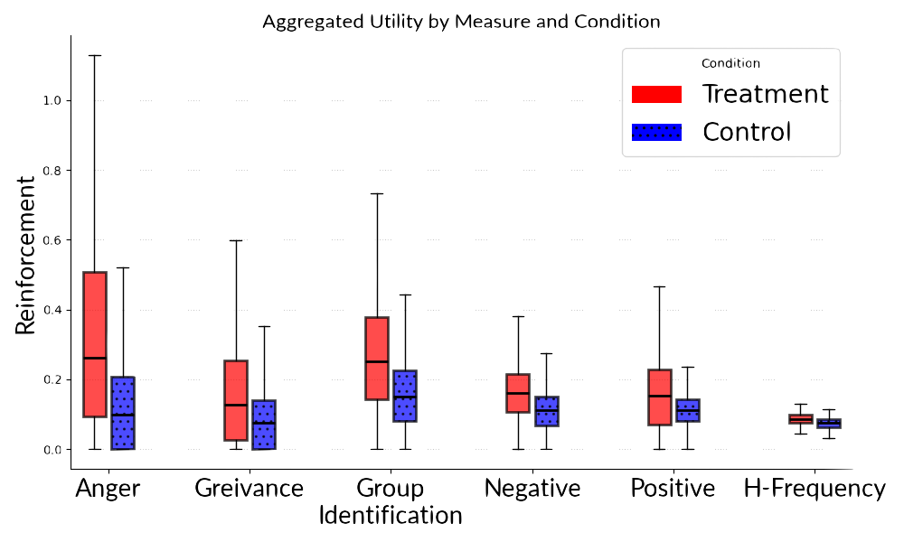
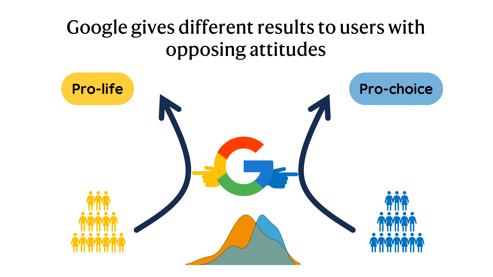

YouTube Recommendations Reinforce Negative Emotions: Auditing Algorithmic Bias with Emotionally-Agentic Sock Puppets. | Submitted 25
Hussam Habib,, Rishab Nithyanand
Does YouTube's recommendation algorithm recognize and reinforce emotional preferences? Using a sock-puppet experiment with 500 emotionally-agentic simulated users, we find that YouTube's recommendation algorithm reinforces and amplifies emotions, particularly negative emotions.
[arxiv]

Characterizing Platform Behavior: Quantifying the Effect of User Interactions on Social Media Homepage Curation. | Submitted 25
Hussam Habib, Ryan Stoldt, Raven Maragh-Lloyd, Brian Ekdale, Rishab Nithyanand
How are homepages of social media platforms curated? Using a large sclae audit of YouTube, X (Twitter), and Reddit we investigate how each platform infer user preferences from user interactions. We characterize platform behaviors as patterns found within the homepage curation.
[arxiv]

Auditing Information Seeking: User's beliefs & attitudes influence Google Search results. | Submitted 25
Hussam Habib, Ryan Stoldt, Andrew High, Brian Ekdale, Ashley Peterson, Katy Biddle, Javie Ssozi, Rishab Nithyanand
Modern information seeking processes are often mediated by search engine. In this work, we find Google Search to present different results on abortion depending on the user's attitudes towards abortion. The vocabulary use to write their queries and their search history act as powerful implicit signals that influence the search results.
[arxiv]

To Act or React: Investigating Proactive Strategies For Online Community Moderation | ICWSM 22
Hussam Habib, Maaz Bin Musa, Fareed Zaffar, Rishab Nithyanand
Community-level moderation for Reddit and similar platforms is a complex task. Our analysis show that subreddits are constantly changing and therefore timely interventions are prohibitively expensive because of the scale. To address this issue, we propose a flagging tool which aids administrators by flagging subreddits that exhibit similarly problematic behavior as seen in previously banned communities.
[paper]

Reddit and the Fourth Estate: Exploring the magnitude and effects of media influence on community level moderation on Reddit | ICWSM'22
Hussam Habib, Rishab Nithyanand
Studying the inconsistencies in Reddit's community-level interventions we observe that negative attention from media towards a subreddit is significantly more likely to result in a ban of a subreddit than high levels of toxicity within the community. Our results conclude that Reddit's incentives for banning a community are primarily to maintain an image of a civil platform (reactively). Measuring whether these misaligned incentives effect the effectiveness of interventions -- we see media attention can at times exacerbate and promote problematic behavior.
[paper]

Making a Radical Misogynist: How online social engagement with the Manosphere influences traits of radicalization | CSCW'22
Hussam Habib, Padmini Srinivasan, Rishab Nithyanand
Online radicalization has been observed to be one of the significant dangers of social media. By measuring users levels of radicalization, we identify online triggers that lead to misogynistic radicalization. We focus entirely on fundamental engagement events and measure their impact on user's behavior. Our findings from a randomized treatment-control experiment show that participation in problematic communities, interaction with radical users and social status in a platform can influence significant increase in problematic behavior.
[paper]

The Morbid Realities of Social Media: An Investigation into the Misinformation Shared by the Deceased Victims of COVID-19 | ICWSM'23
Hussam Habib, Rishab Nithyanand
We investigate the misinformation shared by the deceased victims of Covid-19. Using a crowdsourced dataset of screenshots of Facebook posts shared by victims of Covid-19 with anti-vaccination and covid denial beliefs. We find Covid-19 narratives to be politicized, being sourced from biased and uncredible sources, and shared by right-winged political personalities. Results from this study bring insights into the responsibility of political elites in shaping public discourse and the platform's role in dampening the reach of harmful misinformation.
[paper]